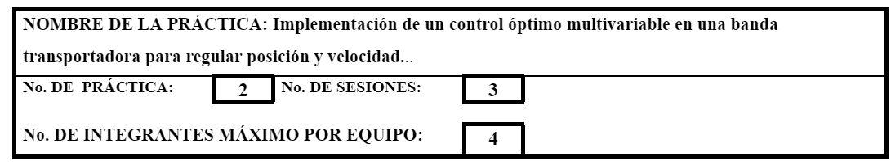
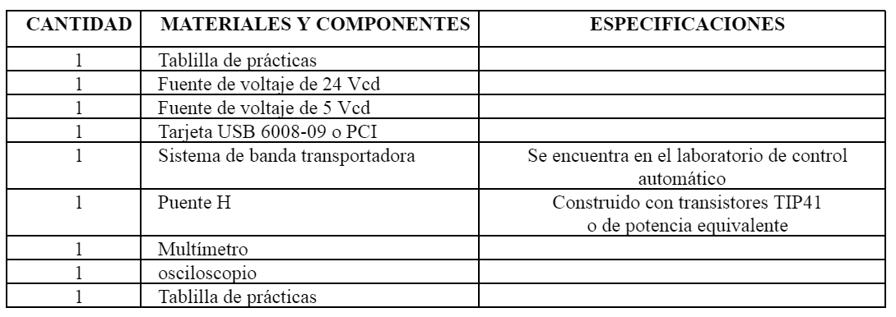
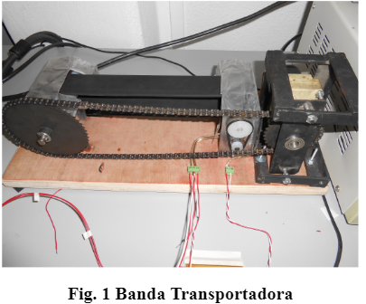
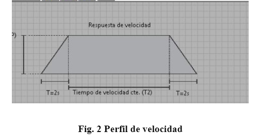

Tarea
1.-Identificación.

2.-Objetivo.
|
Al término de la práctica el alumno habrá implantado en un sistema multivariable un control óptimo de horizonte finito. |
3.-Marco Teórico.
|
El desarrollo del marco teórico será dado en el aula por el profesor. El profesor deberá cubrir los siguientes aspectos:
Nota: Software de apoyo: Matlab y Lab View. . Tarjetas de adquisición recomendadas: USB 6008-09 o PCI. |
4.- Medidas de Seguridad.
|
5.- Reactivos/insumos, materiales/utensilios y equipos.

6.-Procedimiento Para el Desarrollo de la Práctica.
|
1. Para identificar el modelo de velocidad de la planta (Figura 1), realice la respuesta al escalón de la planta. El modelo de posición se obtiene introduciendo un integrador puro. Para ello utilice una fuente de CD y un osciloscopio y/o tarjeta de adquisición de datos para obtener la respuesta de la planta. El voltaje aplicado al motor generará una velocidad en estado estable, registre dicha velocidad y dicho voltaje, en esta zona de operación se hará el experimento para el control óptimo. Realice varios experimentos a distintos voltajes de excitación sobre el motor de CD de la banda y haga registro de las distintas zonas de operación de velocidad de la banda, esto para poder variar la zona de operación del control óptimo. Con este modelo en función de trasferencia realice la representación espacio estado del sistema. 2. Con el modelo aproximado obtenido, realice un observador de Luengenber (para la obtención de la matriz L del observador puede hacer uso del algoritmo de Ackerman) para estimar la velocidad y poder implantar el control óptimo el cual necesita todo el vector de estado (para este sistema posición y velocidad de la banda). Valide la estimación dada por el observador comparándola con un derivador numérico de la posición y con la simulación del modelo aproximado obtenido, con condiciones iniciales iguales para el observador y el sistema y condiciones iniciales diferentes. 3. Implemente (en LabView) un control óptimo de horizonte finito por medio del enfoque de cálculo variacional resolviendo el sistema adjunto. La consigna de posición puede ser constante y la velocidad puede hacerse mediante una rampa con cierta pendiente positiva y luego velocidad constante con pendiente negativa hasta llegar a cero (Figura 2), todo esto debe realizarse en el tiempo tf preestablecido en el índice de desempeño. La posición deseada debe elegirse adecuadamente de acuerdo con el perfil de velocidad elegido. Si es necesario filtre la señal enviado por el potenciómetro usando un bloque de compresión en LabView. 4. Programe una interfaz en Labview en donde puede alterarse Q, R, tf, y el perfil de velocidad y la referencia en posición, así como desplegar el error de seguimiento, la señal de control y las variables de estado. 5. Realice un reporte anexando sus comentarios acerca de la práctica.
  |
7.-Cuestionario.
|
1.- ¿Cuáles son las ventajas entre el control moderno y el control clásico?, justifique su respuesta usando como ejemplo lo realizado en la práctica. Conclusiones: Las anotaciones concluyentes serán realizadas individualmente por los alumnos en el reporte final. |
8.-Bibliografía.
|